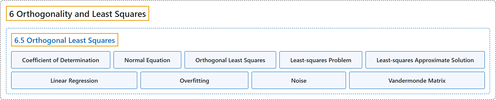

6.5 Orthogonal Least Squares
Classification

Glossary
| Term | Definition | 中文翻译 | Source |
|---|---|---|---|
| 6.5 Orthogonal Least Squares 正交最小二乘 |
(No definition) | （无定义） | Austin, 2023, section 6.5 |
| Coefficient of Determination 决定系数 |
"The coefficient of determination is \(R^2 = 1 - \frac{\vert \mathbf{b} - A\widehat{\mathbf{x}}\vert ^2} {\vert \widetilde{\mathbf{b}}\vert ^2}\), where \(\widetilde{\mathbf{b}}\) is the vector obtained by demeaning \(\mathbf{b}\)." | 决定系数为 \(R^2 = 1 - \frac{\vert \mathbf{b} - A\widehat{\mathbf{x}}\vert ^2} {\vert \widetilde{\mathbf{b}}\vert ^2}\)，其中 \(\widetilde{\mathbf{b}}\) 是对 \(\mathbf{b}\) 去均值得到的向量。 | Austin, 2023, Definition 6.5.12 |
| Normal Equation 正规方程 |
"Because the least-squares approximate solution is the vector \(\widehat{\mathbf{x}}\) such that \(A\widehat{\mathbf{x}} = \widehat{\mathbf{b}}\), we can rearrange this equation to see that \(\begin{aligned} A^T(A\widehat{\mathbf{x}} - \mathbf{b}) & = \mathbf{0}\\ A^TA\widehat{\mathbf{x}} - A^T\mathbf{b} & = \mathbf{0}\\ A^TA\widehat{\mathbf{x}} & = A^T\mathbf{b} \end{aligned}\). This equation is called the normal equation, and we have the following proposition." | 由于最小二乘近似解是满足 \(A\widehat{\mathbf{x}} = \widehat{\mathbf{b}}\) 的向量 \(\widehat{\mathbf{x}}\)，我们可以把这个方程整理为 \(\begin{aligned} A^T(A\widehat{\mathbf{x}} - \mathbf{b}) & = \mathbf{0}\\ A^TA\widehat{\mathbf{x}} - A^T\mathbf{b} & = \mathbf{0}\\ A^TA\widehat{\mathbf{x}} & = A^T\mathbf{b} \end{aligned}\)。这个方程称为正规方程，由此得到下面的命题。 | Austin, 2023, section 6.5 |
| Orthogonal Least Squares 正交最小二乘 |
"This activity illustrates the idea behind a technique known as orthogonal least squares, which we have been working toward throughout this chapter." | 这个活动说明了一种称为正交最小二乘的技术背后的思想，本章一直在为它做准备。 | Austin, 2023, section 6.5 |
| Least-squares Problem 最小二乘问题 |
"Our approach finds the values for \(b\) and \(m\) that make this sum of squares as small as possible, which is why we call this a least-squares problem." | 我们的方法求出使这个平方和尽可能小的 \(b\) 和 \(m\) 的值，这就是我们称之为最小二乘问题的原因。 | Austin, 2023, section 6.5 |
| Least-squares Approximate Solution 最小二乘近似解 |
"We will usually denote the solution of \(A\mathbf{x} = \widehat{\mathbf{b}}\) by \(\widehat{\mathbf{x}}\) and call this vector the least-squares approximate solution of \(A\mathbf{x}=\mathbf{b}\) to distinguish it from a (possibly non-existent) solution of \(A\mathbf{x}=\mathbf{b}\)." | 我们通常把 \(A\mathbf{x} = \widehat{\mathbf{b}}\) 的解记为 \(\widehat{\mathbf{x}}\)，并称这个向量为 \(A\mathbf{x}=\mathbf{b}\) 的最小二乘近似解，以区别于 \(A\mathbf{x}=\mathbf{b}\) 的（可能不存在的）解。 | Austin, 2023, section 6.5 |
| Linear Regression 线性回归 |
"This example demonstrates an approach, called linear regression, in which a collection of data is modeled using a linear function found by solving a least-squares problem." | 这个例子展示了一种称为线性回归的方法，在这种方法中，一组数据用通过求解最小二乘问题得到的线性函数来建模。 | Austin, 2023, section 6.5 |
| Overfitting 过拟合 |
"Fitting the data with a polynomial whose degree is too high is called overfitting, a phenomenon that can appear in many machine learning applications." | 用次数过高的多项式拟合数据称为过拟合，这种现象可能出现在许多机器学习应用中。 | Austin, 2023, section 6.5 |
| Noise 噪声 |
"The error built in to the data is called noise, and its presence means that we shouldn’t expect our polynomial to fit the data perfectly." | 数据中固有的误差称为噪声，它的存在意味着我们不应指望多项式能完美地拟合数据。 | Austin, 2023, section 6.5 |
| Vandermonde Matrix 范德蒙德矩阵 |
"This is called a Vandermonde matrix of degree \(k\)." | 这称为 \(k\) 次范德蒙德矩阵。 | Austin, 2023, section 6.5 |
References
Austin, D. (2023). Understanding linear algebra (2023 update). Retrieved October 29, 2026, from https://understandinglinearalgebra.org/home.html